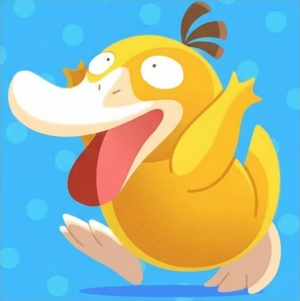
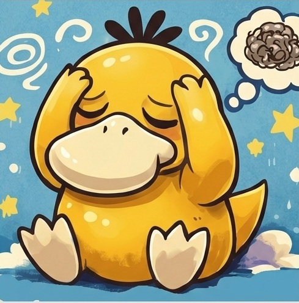

Atif c'est presque ce que tu m'as fait après une semaine


Psykokwak a l'allure générale d'un canard jaune. Il a un bec jaune pâle un peu aplati, les pattes de la même couleur que son bec. Il est souvent pris de migraines, qui lui permettent d'utiliser de puissants pouvoirs psychiques. Malgré ces pouvoirs mentionnés par le Pokédex, il n'est pas de type Psy.Dis-moi ce que tu penses